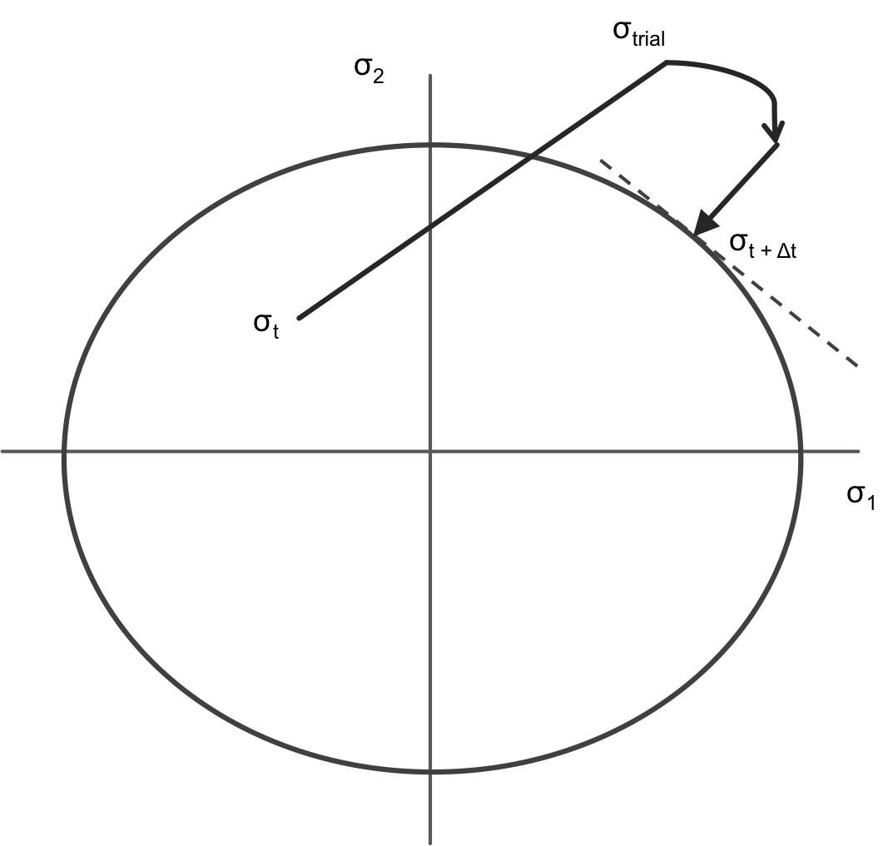

Radial Return Stress Update with automatic differentiation
Base class which calculates the effective inelastic strain increment required to return the isotropic stress state to a J2 yield surface. This class is intended to be a parent class for classes with specific constitutive models.
Algorithm References
The radial return mapping method, introduced by Simo and Taylor (1985), uses a von Mises yield surface to determine the increment of plastic strain necessary to return the stress state to the yield surface after a trial stress increment takes the computed stress state across the yield surface. Because the von Mises yield surface in the deviatoric stress space has the shape of a circle, the _plastic correction stress_ is always directed towards the center of the yield surface circle.
In addition to the Simo and Hughes (2006) textbook, Dunne and Petrinic (2005) is an excellent reference for users working with the RadialReturnStressUpdate materials; several of the isotropic plasticity and creep effective plastic strain increment algorithms are taken from Dunne and Petrinic (2005).
The Radial Return Stress Update Description
The stress update materials are not called by MOOSE directly but instead only by other materials using the computeProperties method. For the ADRadialReturnStressUpdate materials, this calling material is ADComputeMultipleInelasticStress. Separating the call to the stress update materials from MOOSE allows us to iteratively call the stress update materials as is required to achieve convergence.
Radial Return Algorithm Overview

A trial stress is shown outside of the deviatoric yield surface and the radial return stress which is normal to the yield surface.
In this numerical approach, a trial stress is calculated at the start of each simulation time increment; the trial stress calculation assumed all of the new strain increment is elastic strain:
The algorithms checks to see if the trial stress state is outside of the yield surface, as shown in the figure to the right. If the stress state is outside of the yield surface, the algorithm recomputes the scalar effective inelastic strain required to return the stress state to the yield surface. This approach is given the name Radial Return because the yield surface used is the von Mises yield surface: in the deviatoric stress space, this yield surface has the shape of a circle, and the scalar inelastic strain is assumed to always be directed at the circle center.
Recompute Iterations on the Effective Plastic Strain Increment
The recompute radial return materials each individually calculate, using the Newton Method, the amount of effective inelastic strain required to return the stress state to the yield surface.
where the change in the iterative effective inelastic strain is defined as the yield surface over the derivative of the yield surface with respect to the inelastic strain increment.
In the case of isotropic linear hardening plasticity, with the hardening function , the effective plastic strain increment has the form: where G is the isotropic shear modulus, and is the scalar von Mises trial stress.
Once convergence has been reached on the scalar inelastic strain increment, the full inelastic strain tensor is calculated.
The elastic strain is calculated by subtracting the return mapping inelastic strain increment tensor from the mechanical strain tensor. Mechanical strain is considered as the sum of the elastic and inelastic (plastic, creep, ect) strains.
The final inelastic strain is returned from the radial return stress update material, and ComputeMultipleInelasticStress computes the stress, with a return mapping stress increment following elasticity theory for finite strains. The final stress is calculated from the elastic strain increment.
When more than one radial recompute material is included in the simulation, as in Combined Power Law Creep and Linear Strain Hardening, ComputeMultipleInelasticStress will iterate over the change in the calculated stress until the return stress has reached a stable value.
Users can print out any of these strains and stresses using the RankTwoAux as described on the Visualizing Tensors page.
Writing a New Stress Update Material New radial return models must inherit from RadialReturnStressUpdate and must overwrite the six virtual methods.
initQpStatefulProperties: Set the initial values for all new material properties that are not initialized by an input parameter; generally the material properties initialized in this method are all set to zero.
computeStressInitialize: Calculate the initial trial stress state, the yield surface value, and any hardening or softening parameters at the start of the simulation time increment.
computeResidual: In each iteration over the inelastic strain increment, calculate the value of the effective scalar trial stress subtracted by the yield surface function.
computeDerivative: In each iteration over the inelastic strain increment, calculate the derivative of the yield surface function with respect to the inelastic strain increment.
iterationFinalize: Store the value of the inelastic strain increment at the end of each iteration.
computeStressFinalize: Update the stress after convergence on the inelastic strain increment has been reached.
Additionally, new radial return methods must also overwrite a single method from the MOOSE Material class.
resetQpProperties: Set the material property used in the iteration, usually , to zero at the start the iteration. This method is necessary to avoid incorrect material property values.
More details on how to write the equivalent yield surface equation for a creep model are given in Dunne and Petrinic.
Substepping
We provide the substepping capability in ADRadialReturnStressUpdate for nonlinear material models in order to improve the convergence. The idea is that when material is undergoing large deformation and the return mapping algorithm struggles to converge, we would divide the original strain into smaller strain increments and take several substeps where incremental strain is applied at each substep. The following shows an example of the syntax for using substepping.
[Materials<<<{"href": "../../syntax/Materials/index.html"}>>>]
[power_law_creep]
type = PowerLawCreepStressUpdate<<<{"description": "This class uses the stress update material in a radial return isotropic power law creep model. This class can be used in conjunction with other creep and plasticity materials for more complex simulations.", "href": "PowerLawCreepStressUpdate.html"}>>>
coefficient<<<{"description": "Leading coefficient in power-law equation"}>>> = 1.0e-15
n_exponent<<<{"description": "Exponent on effective stress in power-law equation"}>>> = 4
activation_energy<<<{"description": "Activation energy"}>>> = 0.0
temperature<<<{"description": "Coupled temperature"}>>> = temp
# options for using substepping
substep_strain_tolerance<<<{"description": "Maximum ratio of the initial elastic strain increment at start of the return mapping solve to the maximum inelastic strain allowable in a single substep. Reduce this value to increase the number of substeps"}>>> = 0.1
max_inelastic_increment<<<{"description": "The maximum inelastic strain increment allowed in a time step"}>>> = 0.01
[]
[]